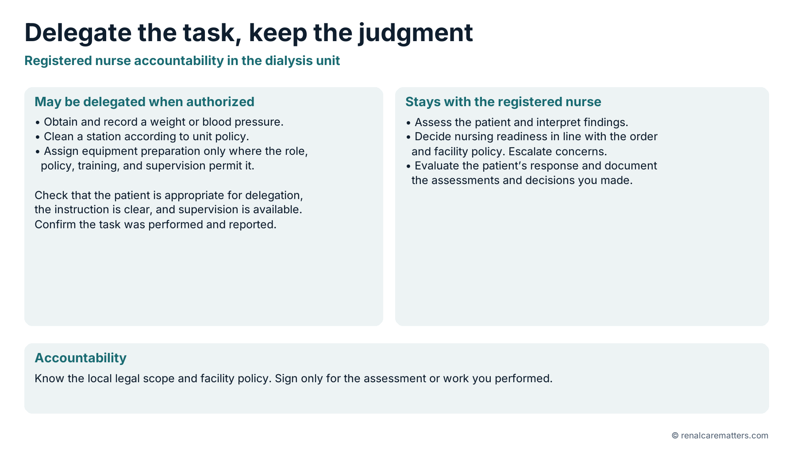
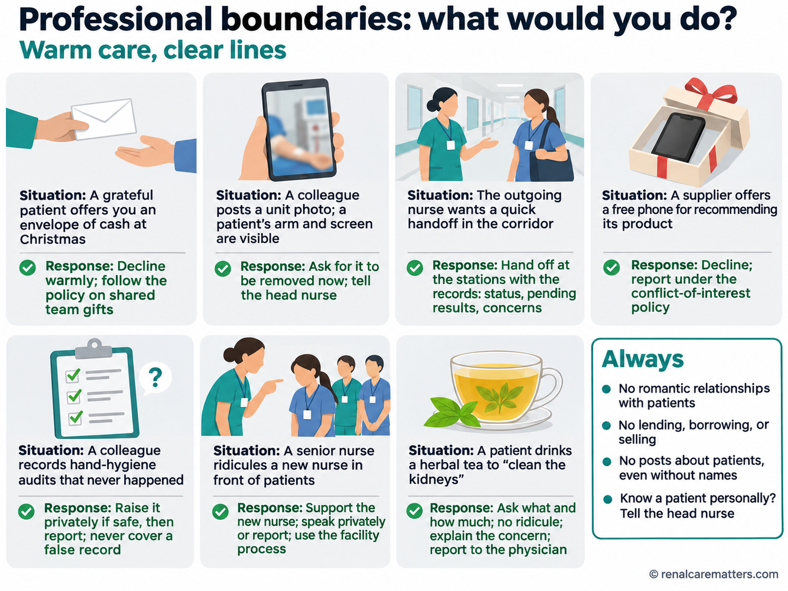
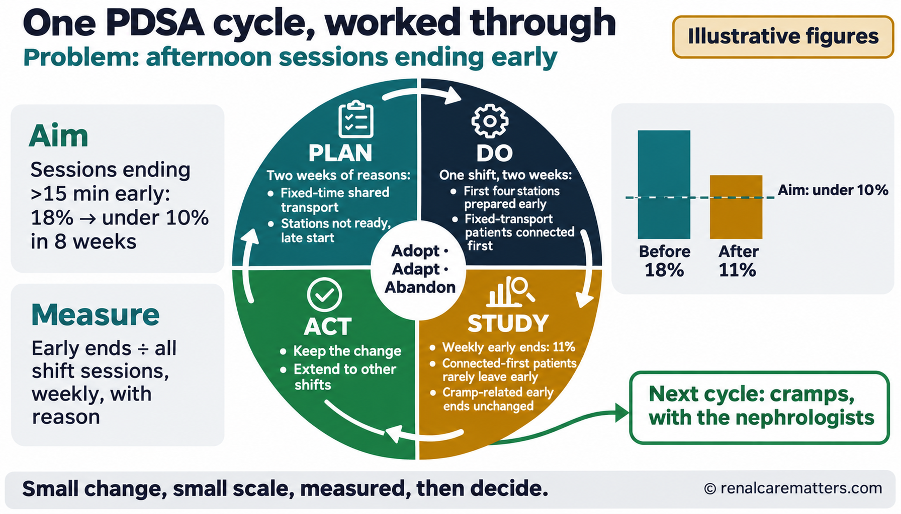
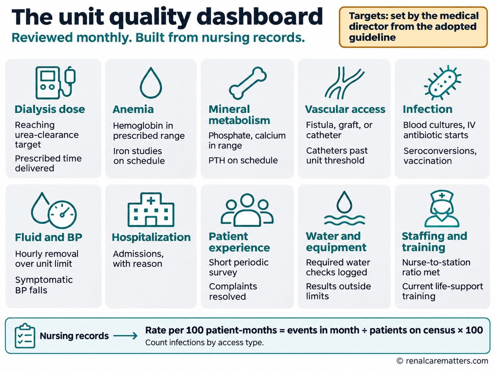
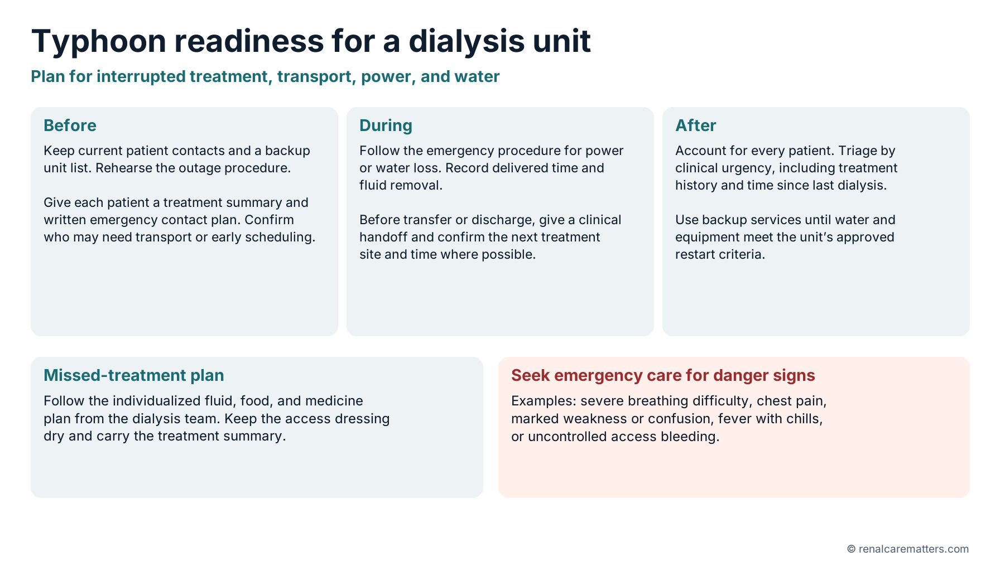
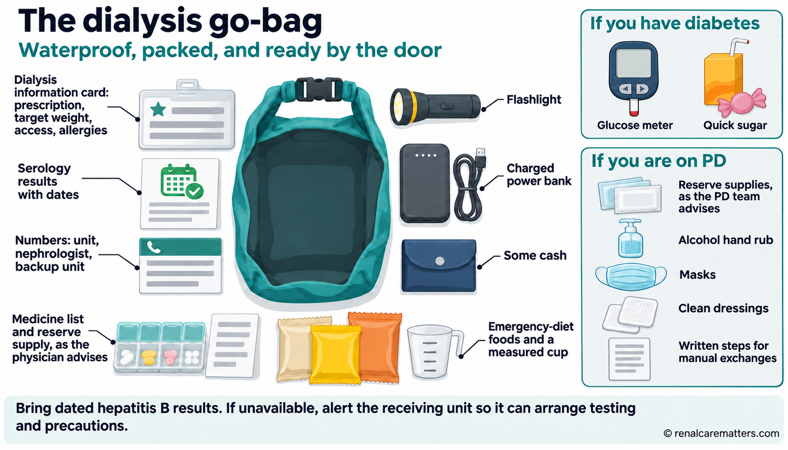
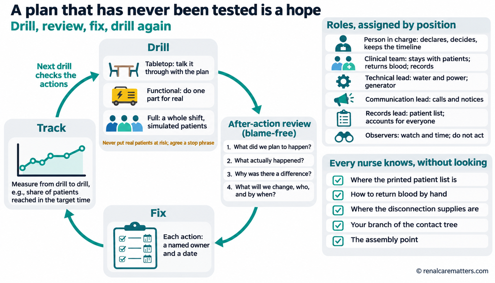

After this module you should be able to
- State the Philippine licensing and training requirements that apply to hemodialysis nurses and name their sources.
- Describe the nurse’s responsibilities for consent, confidentiality, and data privacy.
- Calculate a process-compliance rate from audit observations and explain what it does and does not show.
- Respond correctly to a near miss: intercept, verify, report.
- Communicate treatment status, patient condition, and disposition during a transfer or unit closure.
- Plan and present a small quality audit or case as a capstone.
- Explain what a registered nurse may delegate in a dialysis unit and which responsibilities stay with the nurse.
- List the contents of a complete treatment record and apply the principles of sound documentation and confidentiality.
- Express an infection count as a rate per 100 patient-months and outline one Plan–Do–Study–Act cycle.
- Carry out the immediate steps after a needlestick or splash exposure and describe safe handling of sharps, chemicals, and waste.
- Describe professionalism for a dialysis nurse in terms of accountability, reliability, competence, and respect, and relate it to the Philippine Nursing Act and the Board of Nursing’s Code of Ethics for Registered Nurses.
- Apply professional boundaries, privacy on social media, punctual handoff, conflict-of-interest rules, peer accountability, and cultural humility to common situations in a dialysis unit.
- Describe how typhoons, floods, earthquakes, and power or water outages each threaten a hemodialysis (HD) or peritoneal dialysis (PD) program, and the parts of a unit continuity plan, patient emergency kit, and transfer record that answer each threat.
- Plan and take part in a disaster drill with assigned roles, and lead or contribute to an after-action review that turns findings into dated changes to the plan.
Care is delivered by a system
Think of a jeepney route. The driver may be excellent, but the trip also depends on the roadworthiness inspection, the brakes, the fuel, the traffic rules, and a plan for the day the bridge floods. A hemodialysis (HD) session is the same. It depends on a licensed facility, trained staff, treated water, disinfected machines, a verified prescription, and working electricity. A failure in any one can reach the patient.
The picture has a limit. A jeepney trip that goes wrong usually shows it at once. In a dialysis unit, a weak system can run for months before a patient is harmed, and the warning signs are small: a skipped check, an error caught at the last moment, a log left blank. Good units do not rely on people being perfect. They build checks, count how often the checks are done, look for the errors that almost happened, and rehearse for the day the power or water stops.
The first eleven modules described what you do for one patient. This module is about the system around you. You see that system working or failing on every shift, so your reports are the raw material of improvement.
Every check you complete and every near miss you report is a repair to the system, made before anyone is hurt.
What the Philippine sources require
Three kinds of source set the framework. Do not confuse one with another.
| Source | What it is | What it says about nurses |
|---|---|---|
| Republic Act No. 9173, the Philippine Nursing Act of 2002 | The law that governs nursing practice and licensure by the Professional Regulation Commission (PRC) | Defines the scope of nursing practice, including giving treatments and medicines on a legal order, health teaching, and the duty to observe the code of ethics.1 Bills to replace the Act have been filed in Congress. Until one is enacted, the 2002 Act is the law in force. |
| Department of Health (DOH) Administrative Order (AO) No. 2012-0001 | The licensing rules for dialysis facilities | The nurse must be PRC-licensed, hold a certificate of training in the nursing care of renal dialysis patients from a competent training provider, and hold Basic Life Support (BLS) training. Each shift must have at least one nurse with Advanced Cardiovascular Life Support (ACLS) training. The ratio is not more than four patient stations per nurse.2 |
| Philippine Society of Nephrology (PSN) guidelines, 3rd edition, 2024 | Professional guidance for the operation of HD clinics | Describes a structured nurse training program of three months or more, current BLS and ACLS, and a ratio of one nurse to four patients, or one to six when a nursing assistant is present.3 |
A self-study series such as this one supports that training. It is not a certificate of training under the licensing order, and a quiz score is not a competency assessment. Competence is shown in supervised practice and signed off by a preceptor, within a training program the facility and its regulators accept.
Consent and privacy. The physician obtains consent for dialysis. You confirm that consent is present and current, that the patient still understands and agrees, and you report any doubt. Under the Data Privacy Act, health information is sensitive personal information. It is shared only with those involved in the patient’s care, or as the law allows, and it is kept secure.4 In practice: no patient photographs, names, or results in personal messaging groups or on social media. Screens and charts are not left open to view. Serology results, which decide machine assignment, are communicated discreetly.
Know which document says what: the law sets your scope, the DOH order licenses the unit, and the PSN guidelines describe good practice.
The dialysis team, delegation, and accountability
The licensing order lists the personnel a dialysis facility must have and their qualifications. The PSN guidelines describe how a clinic is organized and supervised.2,3 Job titles differ between units. The table gives the roles in general terms. The job descriptions your own facility has approved are what govern.
| Role | Usual responsibility | What the staff nurse brings to them |
|---|---|---|
| Medical director or head of unit (a nephrologist) | Clinical policies, standards for prescriptions, the quality program, and overall clinical accountability for the unit | Patterns: repeated events, policy gaps, audit results |
| Attending nephrologist | The individual patient’s prescription, dry weight, medicines, and long-term plan | Changes in the patient between visits; treatment that was not delivered as prescribed |
| Physician on duty | Assessment of unstable patients, emergencies, and orders needed during the shift | Abnormal pre-treatment findings; any deterioration during treatment |
| Head nurse | Staffing and assignments, orientation and competency records, supervision of nursing care, and receipt of incident reports | Workload that is unsafe, near misses, equipment or supply problems |
| Staff nurse | Assessment before, during, and after treatment; verification of the prescription; medicines; monitoring; teaching; documentation | The role this course describes |
| Dialysis technician | Machine preparation and disinfection, water system checks and logs, dialyzer reprocessing where it is practiced, and equipment faults | Alarms that recur, machines that behave oddly, doubts about water or dialysate |
| Nursing assistant | Weighing, positioning, comfort, and cleaning of the station between patients, under the nurse’s direction | Clear instructions and a request to report anything unusual at once |
| Dietitian and social worker, on staff or by referral | Nutrition assessment and counseling; financing, transport, and family or psychosocial problems | Early referral: weight loss, missed sessions, a patient who says the cost is too much |
Delegation. The Nursing Act places nursing care, delivered through the nursing process, within the scope of the registered nurse, together with supervision of those who assist.1 You may hand a task to a technician or assistant when four conditions hold. The task is within that person’s training and the unit’s policy. The patient is stable. The instruction is clear. You remain available to supervise. Measuring weight or blood pressure, priming a circuit, and cleaning a station are tasks of this kind.
Three things cannot be handed over, because they are judgments, not tasks: the assessment of the patient, the decision that it is safe to start, and the evaluation of how the patient is responding. A blood pressure reading taken by an assistant is data. Deciding what it means for this patient today is your work, and so is the signature beneath it.
Speaking up. Hierarchy is strong in Philippine health care, and a junior nurse may hesitate to question a senior colleague or a physician. Silence does not protect the patient. A graded script helps, because it gives you the words in advance:
- State the fact: “Doctor, the order is for heparin, and Mr. Santos had a tooth extracted this morning.”
- State the concern: “I am concerned about bleeding.”
- Ask for a specific action: “Please confirm the anticoagulation order before I connect him.”
- If the concern is not answered, say so plainly and go up one level: “I am not comfortable proceeding. I will ask the head nurse to review this with us.”
Use the same structure when the person you must challenge is a peer who skipped a step. Raising a concern is a professional duty, not disrespect. Units that want to hear concerns say so in writing and thank the person who spoke.
Orientation and competency. A new nurse or technician does not take an independent assignment on the strength of a certificate alone. Orientation covers the unit’s machines, water system, emergency equipment, policies, and documentation. A preceptor then observes each skill and signs it off on the unit’s competency form. High-risk or rarely used skills are rechecked at intervals the unit sets. If you are asked to do something not yet signed off, say so. That statement is safe practice, and a well-run unit treats it that way.
Professional growth. The PRC sets Continuing Professional Development (CPD) requirements for license renewal. Confirm the current rules with the PRC, because they have changed over time. Beyond the minimum, growth comes from national renal nursing organizations and their conventions, from international nephrology nursing associations, from precepting others, and from the unit’s own audit data, which shows what actually happens to your patients. Certifications from bodies abroad attest to knowledge and may help a career. They are not Philippine credentials, and they do not replace the PRC license or the training certificate the licensing order requires.2
You can delegate a task. You cannot delegate the judgment about the patient, or the signature that says you made it.

What professionalism means for a dialysis nurse
Professionalism is often described as appearance: a clean uniform, a calm voice, a neat chart. Those matter, but they are the surface. Underneath, professionalism is a set of habits that lets patients and colleagues trust you without checking. You do what you promised. You do it competently. You admit what went wrong. You treat every person with the same respect. In a dialysis unit that trust is tested several times a week, with the same patients, for years.
The legal and ethical frame. Republic Act No. 9173, the Philippine Nursing Act of 2002, defines the scope of nursing practice, places the profession under the Board of Nursing and the PRC, and allows the Board to discipline a registered nurse for unprofessional or unethical conduct.1 The Board of Nursing’s Code of Ethics for Registered Nurses, promulgated by Board Resolution No. 220, Series of 2004, sets out the nurse’s responsibilities to people, to practice, to coworkers, to society, and to the profession. Among other things, it asks nurses to develop the competence their work requires, to keep working relationships collegial and collaborative, and to decline gifts or favors that could be read as taking advantage of patients. You need not memorize the code. Read it once, and know where to find it.
Four parts of professionalism.
| Element | What it looks like on a dialysis shift | What erodes it |
|---|---|---|
| Accountability | Owning one’s actions and their results: reporting a wrong dialyzer before the head nurse finds it, filing the incident report for one’s own near miss, finishing the documentation one started | Hiding errors, blaming the machine or the previous shift, signing for work one did not see |
| Reliability | Arriving on time, prepared; doing the checks every time, not only when observed; following through on what was promised to a patient or colleague | Late arrival that delays the first shift, skipped checks on busy days, promises to patients that are forgotten |
| Competence | Working within one’s training and sign-offs; asking for help with a skill not yet signed off; keeping knowledge current | Doing an unfamiliar procedure to avoid admitting inexperience; relying on what was taught years ago |
| Respect | The same courtesy to a patient who pays privately and one on charity; using the patient’s preferred name; listening before explaining; courtesy to technicians, assistants, and cleaners | Talking about patients in front of others, scolding patients for weight gains, sarcasm toward junior staff |
Why dialysis tests professionalism. The work is repetitive, and repetition invites shortcuts. The hundredth cannulation feels routine, and the step that has never yet mattered is the one that gets skipped. Patients become familiar, and familiarity can slide into casual talk, favors, or impatience. The unit is small, so a conflict between staff is felt by everyone, patients included. Notice these pressures, and keep your standards the same on the fiftieth day as on the first.
Accountability is not blame. A unit that punishes every reported error stops receiving reports. The just-culture approach described later in this module separates three things. Honest mistakes are reported and learned from. At-risk behavior, such as a shortcut that has become normal, is coached. Reckless disregard of a known risk is a disciplinary matter. Owning your actions is easier in a unit that works this way, and you help build that culture by reporting your own near misses first.
Continuing competence. A license shows you were competent on the day of the examination. Staying competent is a continuing obligation. The PRC sets CPD requirements for renewal, as described earlier in this module, and the unit sets its own competency checks for dialysis skills. Beyond these minimums, read the unit’s audit results, learn from incident reviews, keep up with changes such as new vaccines or new machines, and be willing to teach. When guidance changes, update your practice. Do not defend the old habit.
Personal health and fitness for duty. A nurse who is ill, exhausted after a double shift, or impaired by alcohol or medicines is a risk to patients, however skilled. Reporting that you are unfit for duty and asking for relief is a professional act, not a weakness. The unit’s staffing plan should make it possible.
Professionalism is doing the full check on the busy day, when no one is watching, exactly as on the day of your competency sign-off.
Professional conduct: boundaries, privacy, handoff, and speaking up
The ethics section later in this module covers gifts, borrowing, and private arrangements with patients. The points below extend those boundaries to other situations in long-term dialysis care.
Personal relationships. Warmth toward patients is part of good care. A personal relationship is not. A romantic or sexual relationship with a current patient is never acceptable. Friendships outside the unit, business dealings, and working as a patient’s private paid caregiver all blur the line between nurse and friend. They make it harder to give that patient the same care and the same honest information as everyone else. If you already know a patient personally, such as a relative or a neighbor, tell the head nurse, so that assignments can be arranged where needed.
Money. Do not lend money to or borrow from patients or their families, sell them products, collect contributions, or accept payment for a preferred schedule, station, or machine. Refer a patient who asks for help with costs to the social worker and the facility’s assistance processes.
Social media and patient privacy. The Data Privacy Act treats health information as sensitive personal information.4 A post can identify a patient without naming them: a photograph showing a corner of the unit, a description of “my patient with the big fistula who always arrives late,” or a birthday greeting tagged from the unit’s account. Do not post about patients, even without names or faces, and do not discuss workplace incidents online. Decline friend requests from patients politely, under the facility’s policy. Redirect patient questions sent by private message to the unit’s official channels. Your personal posts about colleagues or the facility also reflect on the profession.
Punctuality and handoff. Where the first shift starts early, a late nurse delays every patient on it. Each lost minute is treatment some patient will not receive, or a delay to the next shift. Handoff at shift change is a high-risk moment. Give it at the station or with the record in hand. Cover each patient’s current status, pending results, and concerns. Do not rush it because you want to leave. As the receiving nurse, ask questions until the picture is clear. Responsibility passes only when the handoff is complete.
Conflicts of interest. A conflict of interest exists when something you gain could influence, or appear to influence, care. Examples are accepting meals or gifts from a company that supplies the unit, recommending a pharmacy, laboratory, or supplement in which you have an interest, or receiving a fee for referring patients elsewhere. Declare the interest to the head nurse, follow facility policy, and let the patient’s needs alone guide any recommendation.
Peer accountability. Speaking up to a physician was covered earlier in this module. Speaking to a peer can be harder. A colleague who repeatedly skips hand hygiene between stations, documents checks not done, or seems impaired at work puts patients at risk. Start privately and directly, with the fact and the concern, if it is safe. If the behavior continues, or a patient is in immediate danger, go to the head nurse. Covering for a colleague is not loyalty. It leaves the colleague without help and the patients without protection.
Incivility and bullying. Eye-rolling, public criticism, sarcasm, exclusion, unfair assignments, and shouting are common in high-pressure units, and they often land on new nurses. They cause stress and departures. They also make staff less willing to ask questions or report errors, which harms patients. Do not take part. Do not stay silent when a colleague is targeted. Report persistent bullying through the facility’s process. Senior nurses set the tone: how they answer a junior’s question shows everyone whether questions are welcome.
Cultural humility. Patients in a Filipino unit differ in language, region, religion, income, and beliefs about illness. Many use herbal remedies, consult a manghihilot or faith healer, or turn to prayer alongside dialysis. Cultural humility means asking rather than assuming, listening without ridicule, and recognizing your own assumptions. Ask what the patient is taking or doing. Explain any real safety concern, such as a herbal product that may raise potassium. Record and report it. Do not mock the belief. Use the language the patient understands best, and arrange interpretation for important conversations when needed.
| Situation | Professional response |
|---|---|
| A grateful patient offers a nurse an envelope with cash at Christmas | Decline warmly, thank the patient, and explain that staff cannot accept money; follow the facility policy on shared gifts for the team |
| A colleague posts a photograph from the unit on social media; a patient’s arm and machine screen are visible | Ask the colleague to remove it at once, and inform the head nurse so that the privacy process can be followed |
| The nurse finishing the shift wants to hand off quickly in the corridor | Ask to do the handoff at the stations with the records, covering each patient’s status, pending results, and concerns |
| A supplier representative offers a nurse a free phone for recommending its product | Decline, and report the offer to the head nurse under the conflict-of-interest policy |
| A colleague repeatedly records hand hygiene audits that did not take place | Raise it privately first if safe, then report to the head nurse; a false record is never covered |
| A senior nurse ridicules a new nurse in front of patients | Support the new nurse in the moment, speak to the senior nurse privately or report it, and use the facility’s process if it continues |
| A patient says she drinks a herbal tea from her province to “clean the kidneys” | Ask what it is and how much, avoid ridicule, explain the concern about unknown herbal products in kidney failure, and report it to the physician |
When you are unsure whether something crosses a line, ask whether it could make one patient’s care different from another’s. If it could, step back and tell the head nurse.

Documentation, the legal record, and confidentiality
The treatment record serves three readers. The next nurse needs to know what happened. The physician adjusts the prescription from it. Anyone who later asks whether care was properly given reads it as evidence. In a review or a legal proceeding the record is usually the main evidence of what was done. Care that was given but not recorded is hard to prove.
| Part of the record | What it contains |
|---|---|
| Identity | Two identifiers checked against the patient, date, shift, and station |
| Pre-treatment assessment | Weight and gain since the last session, BP, pulse, temperature, breathing, edema, symptoms since the last session, and access findings |
| Prescription verification | Duration, dialyzer, blood and dialysate flow, dialysate composition, target fluid removal, and anticoagulation, checked against the current order |
| Machine and dialyzer | Machine number, pre-treatment safety checks, dialyzer type, and, where dialyzers are reprocessed, the patient’s name on the label, the reuse number, and the result of the residual-disinfectant test |
| Access | Type and site, needle size and number of attempts or catheter lumen function, and the condition of the site or dressing |
| Times | Actual start and end, and the reason for any interruption or early end |
| Monitoring | Vital signs and machine pressures at the interval set by unit policy, and more often when the patient is unstable |
| Events and responses | What was observed, what was done, who was informed and when, and the patient’s response |
| Medicines and blood products | Name, dose, route, time, and the person who gave them |
| Post-treatment assessment | Weight, vital signs, fluid removed, time for bleeding to stop, access condition, and how the patient left the unit |
| Education and communication | What was taught, how understanding was checked, and messages passed to the physician or family |
| Signatures | The name and signature of each person, against the entries that person made |
Principles.
- Write at the time. Entries made hours later rely on memory and are less accurate. If an entry must be made late, label it as a late entry with the time of writing and the time of the event.
- Be factual and specific. “BP 82/50 at 10:40, patient pale and yawning, fluid removal stopped, placed flat, 200 mL saline given, BP 104/62 at 10:50, physician on duty informed” can be acted on. “Hypotensive episode, managed” cannot.
- Correct errors openly. On paper, draw a single line through the error so that it remains readable, write the correction, and add the date, time, and your initials. Do not erase, overwrite, or use correction fluid. In an electronic record, use the system’s amendment function.
- Never backdate, pre-chart, or sign for what you did not do or witness. A record completed before the event, or a signature on another person’s assessment, is a false record even when the patient came to no harm.
- Keep judgments about people out of the chart. Record behavior and words: “patient said he will stop at three hours because his ride is waiting,” not “non-compliant.”
Incident reports are separate. The chart records the clinical facts of an event and the care given. The incident or near-miss report goes to the unit’s quality system, where it is used to find causes. The chart does not usually state that an incident report was filed, and the report is not kept in the chart. Follow your facility’s policy on both points.
Confidentiality in daily behavior. The Data Privacy Act classifies health information as sensitive personal information. It must be processed for a legitimate purpose, shared only as needed, and kept secure.4 On an ordinary shift, the risks are small habits:
- Messaging apps. Group chats on personal phones are convenient for endorsements and are a common route for leaks. Use only the channels your facility has approved, send the minimum needed, and do not forward patient details to people outside the care team.
- Photographs. A photograph of an access, a wound, or a monitor is patient information. Take one only for a clinical purpose, with the patient’s agreement and under facility policy, and never post treatment-area photographs on social media, even when no face is visible.
- Visitors and other patients. Dialysis stations are close together. Lower your voice for results and personal matters, turn screens away from walkways, and do not discuss one patient with another patient’s companion.
- Serology status. Hepatitis B virus (HBV), hepatitis C virus (HCV), and human immunodeficiency virus (HIV) results guide machine and station assignment (Module 7). Staff who need them for care must have them; they are not announced, written on boards visible to the public, or explained to other patients as the reason for a seating arrangement.
- Release of records. Requests for copies, abstracts, or information from relatives, employers, insurers, or lawyers go through the facility’s records process, with the patient’s authorization or as the law requires. A nurse does not hand over copies or confirm a diagnosis by phone on request.
Write what you saw, what you did, whom you told, and what happened next, at the time it happened.
Ethics in the dialysis unit
You see the same patients several times a week for years. That closeness is the source of most ethical questions in the unit, and of your ability to handle them well. The Nursing Act binds nurses to the profession’s code of ethics.1 The points below apply it to common situations. Legal questions in a particular case go to the physician and the facility’s administration.
Consent is a process. A signed form records a conversation. It does not replace one. Recheck the patient’s understanding and agreement when something changes: a new access procedure, a move to dialyzer reprocessing, a blood transfusion, a change of modality. A patient who seems not to understand, or who has become confused, is reported to the physician before treatment proceeds.
Refusal. An adult with capacity may refuse a session, a needle, a medicine, or dialysis altogether. Your tasks are to find out why, to make sure the patient knows the likely consequences in plain words, to inform the physician, and to record what was said. The patient is not threatened, argued into submission, or discharged from the unit for refusing. Refusing one treatment today is not refusing all care.
The patient who skips or shortens treatments. Missed and shortened sessions are associated with hospital admission and death, so they deserve attention. Blame does not help. Ask what gets in the way, and expect answers like these:
- Cost: sessions, medicines, or laboratory tests that benefits do not cover.
- Transport: distance, fares, a companion who must miss work, or a ride that leaves at a fixed time.
- Symptoms: cramps, low BP, or exhaustion near the end of treatment, which make the last hour something to escape.
- Mood: depression and hopelessness, which are common and treatable.
- Understanding: a belief that feeling well means the session was not needed.
Each has a different remedy and a different team member: the social worker for financing and transport, the physician for a prescription that causes symptoms, a schedule change for the fixed ride. Record the reason given, not only the shortened time.
Disruptive or abusive behavior. Fear, pain, uremia, low blood sugar, and delirium can all present as anger. Your first response is a clinical assessment and a calm voice. Staff are still entitled to a safe workplace. Step back from immediate danger, call for help, do not argue or touch the patient in anger, and report the event through the incident system. The head nurse and medical director manage repeated abuse with a written plan that the patient is told about. You do not negotiate it alone. No patient loses access to dialysis because of a decision made on the unit floor.
Stopping dialysis. Some patients, usually those with advancing frailty or another terminal illness, decide with their families and physician to stop. Module 5 describes that decision and the comfort-focused care that follows. On the unit, you often hear the first hint, such as “I am tired of this.” Do not dismiss the remark or contradict it. Acknowledge it, ask what the patient means, and tell the nephrologist so that a proper conversation can happen.
Fair allocation when capacity is short. After a disaster, or when machines fail, there may be fewer slots than patients. Who is dialyzed first, and whether sessions are shortened so that more patients can be treated, are decisions for the medical director. They follow criteria written in advance and rest on clinical urgency.5 Ability to pay, social standing, and friendship with staff are not criteria. You supply accurate information on each patient’s condition and apply the plan evenly.
Gifts and boundaries. Long relationships bring gratitude, and in Filipino culture gratitude is often expressed with food or small gifts. Follow the facility’s policy. In general, a shared snack for the whole team differs from money or a valuable item for one nurse, which you decline politely. Do not borrow from or lend to patients, sell them products, accept payment for a better schedule, or carry on private arrangements through personal social media. The test is whether the arrangement could make care unequal, or could appear to.
When a patient refuses, skips, or says “I am tired of this,” your first move is the same: ask why, listen, and tell the physician.
Counting what matters
Continuous quality improvement (CQI) asks three questions. What are we trying to improve? How will we know? What change will we test? Measures are of two kinds. An outcome measure counts what happened to patients, for example bloodstream infections per 100 patient-months. A process measure counts whether a protective step was done, for example whether catheter hubs were disinfected before connection. Outcomes are what matter. In a single unit, though, they are infrequent and slow to change. Process measures change quickly and tell staff what to do differently. A process measure is a surrogate. It shows that a step was done, not that a patient was spared an infection.
A process-compliance rate is a fraction:
Compliance (%) = observed events performed correctly ÷ observed opportunities that were eligible × 100.
The denominator is the number of opportunities an auditor actually watched. It is not the number of treatments that day, and not the number of staff. If an auditor observes 40 catheter connections and the hub was disinfected correctly in 34, compliance is 34 ÷ 40, or 85%.
The collaborative described in Module 7 paired this kind of audit, with results fed back to staff each month, with chlorhexidine exit-site care and staff training. In 17 volunteer outpatient units in the United States, the pooled bloodstream infection rate went from 1.09 to 0.89 per 100 patient-months, and the access-related rate from 0.73 to 0.42.6 This was a quality improvement project with no control group, in units that chose to take part. It suggests, and does not prove, that the package caused the fall.
Two cautions apply to every audit. People perform better when they know they are watched, so audited compliance usually overstates everyday practice. A small number of observations gives an unstable percentage, so trends over months tell you more than a single figure.
Tests of change are run as small Plan–Do–Study–Act (PDSA) cycles. Try one change on a small scale, measure, and decide whether to adopt, adapt, or abandon it.
Always ask what the denominator is. A percentage without it cannot be trusted or compared.
Infection surveillance, the unit dashboard, and improvement methods
Surveillance as a routine. Surveillance means counting the same events, defined the same way, every month. A count made only when someone suspects a problem cannot show whether the problem is new. The prevention collaborative cited above counted three events in outpatients: a positive blood culture, the start of an intravenous antibiotic, and pus, redness, or increased swelling at the access site. Each was recorded with the type of access in use.6 Counts become rates so that months, and units of different size, can be compared:
Rate per 100 patient-months = number of events in the month ÷ number of patients on the unit’s census that month × 100.
As an illustration, 3 positive blood cultures in a month with 120 patients on the census is 3 ÷ 120 × 100, or 2.5 per 100 patient-months. Repeat the calculation for each access type, with that group’s own patients as the denominator. Patients with a central venous catheter (CVC) carry the highest risk of bloodstream infection, and a single pooled figure hides this. Count the census the same way every month.6
Other items are tracked alongside. A patient whose hepatitis B surface antigen (HBsAg) or HCV antibody test turns from negative to positive is a sentinel event. One case is enough to require immediate review of that patient’s results, machine and station history, and the unit’s practices. It is reported to the medical director on the day it is found.7 The unit also tracks hepatitis B vaccination and antibody response for patients and staff. It audits hand hygiene and access care by direct observation, and shows the results to the staff who were observed.7,6
Who reports what. The nurse who sees the event records it on the surveillance log the same day. The head nurse or infection-control nurse compiles the month. The medical director reviews the figures at the quality meeting, and staff see them, usually as a simple chart on the unit board. Report clues to an outbreak at once. Do not hold them for the monthly count. The clues are two or more infections with the same organism close together, several patients with fever or chills on the same shift or the same machine, any seroconversion, and reactions that follow a change in the water system, a disinfectant, or a batch of supplies.
The dashboard. Infection is one domain of several. A unit dashboard holds a small set of indicators reviewed monthly. This course gives no targets. Each target comes from the guideline the unit has adopted for that domain, and the medical director sets it. Most of these indicators are surrogates or process measures. They are useful because they move quickly, but a unit that meets every one has not thereby shown that its patients live longer or feel better.
| Domain | Example measures |
|---|---|
| Dialysis dose | Proportion of patients who reach the unit’s urea-clearance target; proportion of sessions that deliver the prescribed time8 |
| Anemia | Proportion with hemoglobin in the prescribed range; proportion with iron studies done on schedule9 |
| Mineral metabolism | Proportion with phosphate and calcium in the unit’s range; parathyroid hormone measured on schedule10 |
| Vascular access | Proportion of patients using a fistula, a graft, or a catheter; catheters in place longer than the unit’s threshold11 |
| Infection | Positive blood cultures and intravenous antibiotic starts per 100 patient-months by access type; seroconversions; vaccination coverage6 |
| Fluid and BP | Proportion of sessions in which the hourly fluid removal rate exceeded the unit’s limit; sessions with a symptomatic fall in BP12 |
| Hospitalization | Admissions per 100 patient-months, with the reason for each |
| Patient experience | Results of a short periodic survey; complaints received and resolved |
| Water and equipment | Proportion of required water checks logged; results outside limits (Module 8)13 |
| Staffing and training | Shifts that met the required nurse-to-station ratio; staff with current life-support training2 |
The licensing order also requires the facility to take part in the national renal disease registry. Part of this information therefore leaves the unit as a regulatory report, and accurate nursing records are where those reports begin.2
A worked PDSA cycle. The figures are invented for illustration.
- Aim: “Reduce the proportion of sessions on the afternoon shift that end more than 15 minutes early from 18% to under 10% within eight weeks.” The aim names what, where, how much, and by when.
- Measure: sessions ending more than 15 minutes early ÷ all sessions on that shift, counted weekly from the treatment records, with the reason recorded for each.
- Plan: two weeks of reasons show that most early ends are requested by patients whose shared transport leaves at a fixed time, and that the shift often starts late because stations are not ready.
- Do: for two weeks, on one shift only, the first four stations are prepared before patients arrive, and patients with fixed transport are connected first.
- Study: the weekly proportion falls to 11%. Patients connected first rarely leave early; early ends for cramps are unchanged.
- Act: keep the change and extend it to the other shifts; begin a second cycle on cramps with the nephrologists.
Run charts. Plot the measure for each week or month as a point on a line, in time order, with the median drawn across. Every process varies, and a single high or low point usually means nothing. A real change shows as a sustained shift, with a run of consecutive points all on one side of the median, or as a steady trend in one direction. Mark the date each change was introduced on the chart, so that cause and effect can be read together.
Root cause analysis. When an event harms a patient, or nearly does so in a way that could recur, the unit asks why it happened, not who did it. The “five whys” method follows one chain. The wrong dialyzer was used. Why? It was taken from the wrong shelf slot. Why? Two patients with similar surnames had adjacent slots. Why? Slots are assigned in alphabetical order. Why was it not caught? One person did the label check during a busy turnover. The last answers point to things that can be redesigned. A fishbone diagram does the same across categories (people, procedure, equipment, materials, environment, and management) when several causes contribute. Strong corrective actions change the system, for example by separating similar names and requiring a two-person check with the patient. Weak ones tell staff to be more careful.
Just culture. Staff report errors only where reporting is safe. A just culture is neither blame-free nor punitive. It separates three behaviors.
| Behavior | Example | Fair response |
|---|---|---|
| Human error: an unintended slip or lapse | A nurse misreads a handwritten dose | Support the person; fix the conditions that made the slip easy |
| At-risk behavior: a shortcut whose risk is not felt or is believed justified | Skipping the second-person dialyzer check when the unit is busy | Coach; find out why the shortcut is attractive and remove that reason |
| Reckless behavior: conscious disregard of a known, substantial risk | Falsifying a water log; working while impaired | Accountability through the facility’s disciplinary process |
Count the same thing the same way every month, and act on a single seroconversion the day you find it.


Near misses, transfers, and the day the power fails
Near misses. A near miss is an error caught before it reached the patient. The wrong dialysate concentrate is connected and noticed at the pre-treatment check. A dialyzer is labeled for another patient. An anticoagulant dose is drawn up for the wrong weight. Your response has three parts. Intercept: stop, and do not proceed. Verify: check against the order with a second person, and correct the setup. Report: tell the charge nurse and complete the unit’s incident or near-miss report. Reporting an error that harmed no one can feel unnecessary. It is the opposite. A near miss shows where the system is weak at no cost to a patient. A unit that hears about its near misses can fix the cause before the same error gets through.
Emergency transfer. Free-standing units must have an arrangement for emergency transport and a receiving hospital.2 When a patient is transferred during or after treatment, your handoff states: why the patient is being transferred; how much of the prescribed treatment was delivered (time and fluid removed); vital signs and symptoms now; whether blood was returned, and the estimated blood loss; the anticoagulant given and when; the access type and its condition; medicines given; serology status relevant to isolation; and who has been informed, including the family.
Disruption planning. Typhoons, floods, earthquakes, and long power or water interruptions recur in the Philippines. A 2023 narrative review of disasters and kidney care describes how disruption of dialysis after disasters is associated with emergency admissions and deaths, and how preparation before the event reduces the risk.5 Every unit should have a written plan, and you should know your part in it:
- Before: an up-to-date patient list with contact numbers, schedules, access type, and serology; identified back-up units; each patient taught an emergency diet with stricter fluid and potassium limits and told where to go if the unit is closed; early or extra sessions ahead of a forecast typhoon when the nephrologist orders them.
- During an interruption of power or water: follow the unit procedure for returning blood and ending treatments safely, including manual return if the machine has no battery; record the delivered time and fluid for each patient; treatment is not restarted until water and dialysate safety have been rechecked (Module 8).
- When the unit closes: each patient or family is told, in person or by phone, three things: how much treatment was delivered today, what their condition is and what symptoms need emergency care, and where and when their next dialysis will be. The receiving unit gets the same information with the prescription.
When a session is cut short, three facts must leave with the patient: what was delivered, what to watch for, and where the next dialysis will be.
Protecting the staff
A dialysis unit exposes its staff to blood at every connection and disconnection, to chemical disinfectants, to repetitive physical work, and to the strain of long relationships with seriously ill people. A nurse who is injured or exhausted cannot keep patients safe, so staff safety belongs to the quality program.
Needlestick and splash exposure. Fistula needles are large-bore, hollow, and filled with blood. An injury from a used one is a high-risk exposure. The sequence is the same every time:
- First aid at once. Wash the wound with soap and running water. Flush splashes to the eyes, nose, or mouth with plenty of clean water or saline. Do not squeeze or suck the wound, and do not apply bleach or other caustic agents; they damage tissue and do not lower the risk.
- Hand over the patient. Ask a colleague to take over so that care continues safely.
- Report immediately, during the shift, to the charge nurse and through the facility’s exposure pathway. Do not wait for the end of the shift.
- Testing. The pathway arranges testing of the source patient, with consent as policy requires, and baseline testing of the exposed person for HBV, HCV, and HIV.
- Post-exposure prophylaxis. Whether medicines or immunoglobulin are needed is decided by the hospital’s occupational health or infection-control physician from the source results and the exposed person’s immunity. Where prophylaxis is indicated it works best when started within hours, which is the reason for reporting without delay.
- Follow-up and record. Attend the follow-up tests, and complete the incident report so that the cause, whether a device, a procedure, or a crowded station, can be addressed.
Every staff member who may touch blood should be vaccinated against hepatitis B, with the antibody response tested and documented after the series. Then immune status is already known on the day of an exposure.7
Sharps. Do not recap used needles. Activate the safety guard as the needle is withdrawn, where the device has one. Place the needle straight into a puncture-proof container within arm’s reach of the station. Never carry it across the room. Replace containers before they reach the fill line. Do not pass sharps hand to hand. Ask the patient to keep still before you remove a needle.
Chemical hazards. Units use bleach, peracetic acid, citric acid, and other agents to disinfect machines, surfaces, the water loop, and, where practiced, dialyzers. They irritate the eyes, skin, and airways, and some combinations release toxic gas. Use each product only at the dilution and contact time on its label, in a ventilated area, wearing the personal protective equipment (PPE) named on its safety data sheet. Never mix chemicals, and never pour one into a container that held another. Label every secondary container. Know where the eyewash is. Report headache, cough, wheeze, or eye irritation during chemical work.
Ergonomics and fatigue. Cannulation is done bent over a low chair. Carrying concentrate containers, moving patients, and standing for long shifts add to the load. Raise the chair or sit to cannulate. Use trolleys and two people for heavy lifting, and transfer aids for dependent patients. Fatigue raises the rate of errors and of needlestick injuries, so breaks, safe staffing, and limits on consecutive shifts protect patients as well as staff. If you are too tired or unwell to practice safely, tell the head nurse.
Violence. Report threats or assault by patients or companions like any other incident. They are not part of the job. Know how to summon security, keep a clear path to the exit, and do not handle an escalating person alone.
Burnout and peer support. Dialysis nurses lose patients they have known for years, often several in a year. Emotional exhaustion, detachment from patients, and the sense that nothing you do matters are the signs of burnout. They are consequences of the work, not signs of weakness. What helps: a short debrief after a death or a resuscitation, a colleague who checks on the nurse involved in an error, fair distribution of difficult assignments, and counseling where the facility provides it.
Health-care waste. Segregate waste where it is produced. Do not sort it afterward. Sharps go into puncture-proof containers. Used dialyzers, bloodlines, and blood-soaked items are infectious waste, kept apart from general waste such as packaging. Chemical containers and expired medicines have their own streams. Bin and bag colors, and the rules for storage, transport, and treatment, follow the DOH health-care waste management manual and your facility’s policy. Drain bloodlines into the machine before disposal as the unit procedure directs, cap their ends, and do not overfill bags.
After a needlestick: wash, hand over, report, all within minutes. Prophylaxis, when it is needed, works best when started early.
Disaster and disruption readiness in depth
The earlier section set out what happens when power fails during a shift. This section covers the unit’s preparation across the whole cycle. The international review on disasters and kidney care, and the PSN guidelines, rest on one observation: what decides survival is mostly arranged before the event.5,3
| Phase | What the unit does | The nurse’s part |
|---|---|---|
| Before: at all times | Keeps a patient list with at least two contact numbers each, on paper as well as on a device. Sets up a contact tree in which each staff member calls a fixed group of patients. Makes written arrangements with backup units outside the likely affected area. Maintains the generator, fuel, and stored supplies. Writes a staff call-in plan that states who reports, who stays home, and how staff will be reached. | Updates contact details at every visit. Knows the patients on their branch of the tree. Takes part in drills, including manual blood return. |
| Before: each patient | Issues a card or sheet with diagnosis, dialysis prescription, dry weight, access, serology, medicines, allergies, and the telephone numbers of the unit and physician. | Checks that the card is current. Teaches the patient to keep it with medicines in a waterproof bag and to carry it when evacuating. |
| Before: when a typhoon is forecast | Reschedules sessions earlier on the nephrologist’s order so that patients enter the storm recently dialyzed. Confirms the backup units. Secures water, power, and records. | Calls patients with the changed schedule. Repeats the emergency teaching below. Identifies patients who live in flood-prone or isolated areas. |
| During | Ends treatments safely if utilities fail. Protects patients and staff in the building. Keeps one person in charge of communication. | Follows the unit procedure. Records the delivered treatment for each patient. Does not make unsafe journeys to work against the call-in plan. |
| After | Accounts for every patient by name. Assesses the building, power, and water. Restarts only when the water system has been recommissioned and tested (Module 8). Sends patients to backup units meanwhile. | Works through the contact tree and reports those not reached. Lists each patient’s last session and current symptoms so that those most overdue are placed first. |
Accounting for every patient. After a disaster, the unit’s first clinical task is a roll call, not dialysis. For each patient the contact tree records whether the patient was reached, where the patient is, when the last dialysis took place, whether there are symptoms, and whether the patient can travel. Report patients who cannot be reached to the head nurse. Through the facility, they are reported to local disaster or health authorities, because a dialysis patient who is cut off has only days of safety.
Prioritizing. When slots are limited, the medical director’s plan orders patients by clinical urgency: the longest interval since the last session, breathlessness or a marked fluid gain, symptoms or results that suggest high potassium, and little or no urine output. Sessions may be shortened by order so that more patients receive some treatment. The ethics section describes the principles of fairness that apply.5
Restarting the unit. Floodwater, a long stagnant period, or a change in the municipal supply can contaminate the water system, including the reverse osmosis (RO) unit and the distribution loop. The technician and medical director decide when the system is safe, following the disinfection and testing steps in Module 8 and the water order.13 Waiting patients are not a reason to shorten those steps. Contaminated dialysate harms every patient on the shift at once.
What patients are taught for days without dialysis. Give this teaching in ordinary times, and repeat it before each typhoon season, in the patient’s own language, with a family member present. The amounts for each patient come from the nephrologist and dietitian.
- Fluid: a stricter limit than usual, counting soups and watery foods.
- Salt: as little as possible, because salt drives thirst. Relief goods such as canned food, instant noodles, and dried fish are very salty, so the patient needs to know which items to limit or rinse.
- Potassium: avoid high-potassium foods (Module 3) and salt substitutes, and continue any potassium-binding medicine that has been prescribed.
- Medicines: keep a reserve supply, continue them, and bring them when evacuating.
- Access: keep a catheter dressing dry and clean; do not wade through floodwater with a catheter or an open wound if this can be avoided.
- Go to an emergency department without waiting for the unit to reopen for breathlessness, chest pain, palpitations, marked weakness or inability to stand, confusion, fever with chills, or bleeding from the access. Tell the staff at once, “I am a dialysis patient and I have missed treatment.”
- Evacuation centers: tell the staff on arrival that you need dialysis, show the card, and ask them to contact the unit.
After each event or drill, the unit holds a short review of what worked, who could not be reached, and what ran out, and revises the plan. That review is a PDSA cycle applied to the disaster plan.
After a disaster, find every patient before you dialyze any. The roll call is the first treatment.

Disasters by hazard: continuity plans, emergency kits, transfers, and records
The earlier sections described the cycle of readiness: before, during, and after an event, the roll call, and how patients are prioritized when slots are scarce. This section takes the hazards one at a time, because each threatens a different link in the chain that keeps a patient on hemodialysis (HD) or peritoneal dialysis (PD) alive. It then covers three tools that answer all of them: the unit continuity plan, the patient’s emergency kit, and the transfer record. The patient-facing detail, including typhoon signal levels and the emergency diet, is in the site guide on typhoon and disaster preparedness for dialysis patients. Use it as a teaching companion.
The plain model. Think of dialysis as a chain of five links. An HD treatment needs all five at once: a patient who can reach the unit, staff who can reach it too, electricity, treated water, and supplies. PD at home needs the patient, clean supplies, a clean place for exchanges, and, for a cycler, electricity. A disaster endangers a dialysis patient when it breaks any one link for longer than the patient can safely wait.
The picture has a limit. Links in a chain are equal. These are not. A patient can wait out a delayed delivery of supplies for days, but not a week without dialysis, and how long each patient can wait depends on urine output, potassium, and fluid gain. Planning is the work of finding a second route for each link before it breaks, and knowing which patients can wait least.5
| Hazard | Links it usually breaks | What the plan adds |
|---|---|---|
| Typhoon | Travel, power, and staff, usually with some warning | Sessions moved earlier by order; confirmed backup units outside the storm track; supplies and fuel topped up before landfall; staff call-in decided in advance |
| Flood | Travel and water quality; the building itself if the unit is on a low floor | Machines, records, and stock kept above the expected flood level where possible; patients in flood-prone areas identified early; no restart until the water system is tested (Module 8) |
| Earthquake | Everything at once, with no warning; the building and the water pipes may be damaged | Machines and shelves secured; a rehearsed procedure for patients on the machine during shaking; a building check before anyone returns; backup units in another area |
| Power outage | Machines, water treatment, lighting, and cold storage of medicines | Generator tested under load on a schedule, with fuel for the planned duration; which machines and water equipment run on backup power is known; manual blood return practiced |
| Water outage or contamination | Dialysate production; hand hygiene; cleaning | Stored water capacity known; an agreement on supply by tanker or from the utility; how long the unit can run on stored water calculated in advance |
During an earthquake with patients on the machine. Stay with your patients. The usual principle is to protect heads from falling objects, keep the patient in the chair with the lines secured, and not to start disconnecting while the floor is moving. A needle pulled out during shaking can bleed heavily. When the shaking stops, the charge nurse decides whether to return blood and end treatments, or to use the unit’s emergency disconnection method, and whether to evacuate. Each patient leaves with the access covered and secured. Record the delivered treatment as soon as it is safe.
The unit continuity plan. The plan is a written document, approved by the medical director and kept on paper as well as electronically. It usually covers:
- Hazard map: which hazards are likely for this building and this patient population, including which barangays or towns flood first.
- Utilities: generator capacity and fuel, stored water, and the contacts for the power and water utilities.
- Supplies: how many days of dialyzers, lines, concentrates, needles, and medicines the unit keeps on hand, and the supplier’s emergency delivery arrangement.
- People: the staff call-in plan, how staff who cannot travel are covered, and arrangements for staff who must stay overnight.
- Partners: written arrangements with backup units in different areas, the receiving hospital for emergencies,2 and the local government disaster office. Nationally, disaster response is coordinated through the National Disaster Risk Reduction and Management Council, working with local government units.
- Communication: who speaks for the unit, a group message list for patients and staff, a fallback when mobile networks fail, and a posted notice at the unit entrance.
- Review: when the plan is reviewed, who signs it, and how changes are taught to staff.
The Department of Health (DOH) licensing rules and the Philippine Society of Nephrology (PSN) guidelines set the requirements that apply to the facility.2,3 Check the plan against the current versions of both.
The patient emergency kit. The card or sheet described earlier is the core. Around it, help each patient prepare a waterproof bag kept ready by the door, containing:
- the dialysis information card with the prescription, target weight, access type, recent serology results with dates, allergies, and contact numbers for the unit, the nephrologist, and at least one backup unit;
- a list of medicines and a reserve supply, as the physician advises;
- foods suited to the emergency diet and a measured cup for fluids, so that limits can be kept away from home;
- a flashlight, a charged power bank, and some cash;
- for a patient with diabetes, a glucose meter and a quick source of sugar;
- for a patient on PD, a reserve of supplies as the PD team advises, alcohol hand rub, masks, clean dressings, and written instructions for manual exchanges in case the cycler cannot run.
The emergency diet is taught in principle in the readiness section and in detail in the site guide. Its amounts come from the nephrologist and dietitian.
Patients on PD. PD can continue through many disasters if supplies and a clean space last, which is an advantage. The risks differ from HD. A cycler stops without power, so patients must have practiced manual exchanges. Floodwater and crowded evacuation centers make infection of the exit site and of the abdomen more likely. Deliveries of solution may stop for days. Teach patients to keep supplies off the floor, to do exchanges in the cleanest space available with hand hygiene, and to report cloudy fluid, abdominal pain, or fever at once.
Transferring patients to other units. The receiving unit needs enough to treat the patient safely at the first session. The transfer record includes the current prescription and target weight, the date and details of the last treatment, the access type and any recent problems, serology results with dates, the latest laboratory results, medicines and allergies, and the nephrologist’s number. A patient whose hepatitis B status cannot be confirmed may have to be treated as if positive until tested, which delays care. Dated serology results on paper prevent this. The sending unit keeps a list of where each patient went, so that every patient can be brought back and followed up.
Records. Electronic records may be unreachable when power or networks fail, and paper records can be destroyed by water. Keep an up-to-date summary list of all patients in more than one form and place, such as a printed copy in a waterproof container and an encrypted copy a designated person can open off-site, under the facility’s data-privacy rules. Enter treatments given during an emergency, including shortened sessions and treatments at other units, as soon as possible, with the reason for any change from the prescription.
For each hazard, ask which link it breaks and what the second route is. Write the answer into the plan before the season starts.

Running a disaster drill and learning from it
A plan that has never been tested is a hope. Drills show whether people know their parts, whether phone numbers still work, and whether equipment does what the plan assumes. They also let staff act under pressure before it is real.
Kinds of drill. Units usually build up from simple to complex:
- Tabletop exercise: the team sits together and talks through a scenario, such as a typhoon forecast to make landfall in two days, step by step, using the written plan. It is cheap and finds gaps in the plan itself.
- Functional drill: one part of the plan is performed for real, such as calling every patient on the contact tree within a set time, starting the generator and running the unit on it, or practicing manual blood return on a training circuit.
- Full drill: a whole shift practices a scenario, such as an earthquake during treatment followed by evacuation, with simulated patients or staff playing patients. Real patients are never placed at risk to make a drill realistic.
Roles. Write each role down. Assign it by position, not by name, so that it is filled on every shift. Brief it before the drill:
| Role | Responsibilities in the drill |
|---|---|
| Person in charge (usually the charge nurse or the physician on duty) | Declares the emergency, decides whether to end treatments or evacuate, assigns tasks, and keeps a timeline |
| Clinical team | Stays with assigned patients, returns blood or disconnects by the unit method, assesses each patient, and records the delivered treatment |
| Technical lead (dialysis technician) | Isolates and secures water and power equipment, starts the generator if used, and reports the state of the water system |
| Communication lead | Calls the medical director, backup units, and families; keeps the contact tree moving; posts notices |
| Records lead | Takes the printed patient list and the transfer records; checks that every patient and staff member is accounted for at the assembly point |
| Observers | Do not take part; note times, delays, and problems for the review |
Running it safely. Announce the drill to patients and staff where surprise is not the point of the exercise. Agree a clear phrase that stops it at once if a real emergency occurs. Label practice equipment, such as a training circuit, so it cannot reach a patient.
The after-action review. Hold it as soon as possible after the drill, while memory is fresh. It is a short, blame-free discussion built on four questions:
- What did we plan to happen?
- What actually happened? (The observers’ timeline helps here.)
- Why was there a difference?
- What will we change, who will do it, and by when?
Typical findings are outdated phone numbers, a generator that started but could not carry the full load, a flashlight with dead batteries, staff unsure who calls the backup unit, and patients who could not find their information cards. Write each action with a named owner and a date. The next drill checks whether it was done. This links the drill to the improvement methods earlier in the module. A measure such as “percentage of patients reached within the target time” can be tracked from drill to drill like any other unit indicator. Keep the plan, the drill dates, the attendance, and the review actions on file, because a licensing inspection may ask for evidence that the plan is practiced.
Your part. You should be able to say, without looking, where the printed patient list is kept, how to return blood by hand on the unit’s machines, where the emergency disconnection supplies are, which patients are on your branch of the contact tree, and where the assembly point is. If you cannot answer one of these, you have found an item for the next review.
Every drill ends with dated actions and named owners. A finding without an owner will be found again at the next drill.

The capstone project
Choose one of two formats and agree it with your preceptor.
Option A: a case presentation. Present one fictional or fully de-identified renal case in ten minutes. Cover the assessment, the nursing priorities, what you communicated and to whom, what you taught, and what you escalated. Add one thing the literature or a guideline says about the main problem, and say how strong that evidence is. Remove the name, dates, facility, and any detail that could identify the patient.
Option B: a small quality audit. Pick one process that matters in your unit: hand hygiene before access care, hub disinfection, visible access during treatment, a completed pre-treatment water log, or delivered against prescribed time. Define what counts as an eligible opportunity and what counts as correct. Observe at least 20 to 30 opportunities across more than one shift. Report the numerator, the denominator, and the percentage. Describe what you saw that explains the gaps. Propose one small change. State a measurable follow-up, for example: “repeat the same 30 observations in four weeks and compare.”
Either way, your preceptor assesses the capstone, not this website.
Case: A near miss and a brownout
At 7:40 in the morning, during pre-treatment checks, Ms. Liza Navarro notices that the acid concentrate connected to station 4 is a 3.0 mmol/L potassium formulation. The order for this patient is 2.0. The patient has not been connected.
That afternoon a typhoon signal is raised. At 2:15 the power fails, and the generator does not start. Five patients are on treatment, between 1 hour 30 minutes and 3 hours 10 minutes into 4-hour sessions. The unit will be closed tomorrow.
Before reading on, decide what you would assess, what you would communicate and to whom, what you would teach, and what would make you escalate. Then compare with the outline below.
Assess
Communicate
Teach
Escalate
Check your understanding
Each visit draws 5 questions at random from this module’s 19-question bank, in a shuffled order. Choose the single best answer for each, then select Check answers; a rationale appears under every option. Reload the page or select New set of questions for a different mix. Nothing you select is sent anywhere; scoring happens in your browser.
What this module builds
Each competency names an observable ability, the level this module aims for, and how that level is confirmed. Levels follow Miller’s pyramid. Self-study reaches knows; the higher levels are reached only when an educator or preceptor verifies them, and they are recorded on the competency checklist.
- Knows Explains the reasoning and applies it to cases. Verified by the self-assessment and the nursing case.
- Shows how Demonstrates the skill in simulation, a skills station, or teach-back. Verified by an educator.
- Does, supervised Performs the task with real patients under direct supervision. Verified by preceptor observation.
- Does, independent Performs the task without direct supervision after preceptor sign-off under the unit’s policy.
| Competency | Thread | Target level | Verified by |
|---|---|---|---|
| Locates the unit’s license, policies, incident-report form, and disaster plan, and states the nurse training and life-support requirements with their sources: the Nursing Act, DOH licensing order, and PSN guidelines. | Professional, ethical, and legal practice | Does, supervised | Observed practice |
| Explains the nurse’s duties for consent, confidentiality, and data privacy, and which tasks may be delegated while assessment, the decision to start, and evaluation stay with the nurse. | Professional, ethical, and legal practice | Knows | Self-assessment, Nursing case |
| Completes treatment records that are timely, factual, openly corrected, never pre-charted or backdated, and kept confidential, after preceptor sign-off. | Communication, handoff, and documentation | Does, independent | Observed practice, Record review |
| Conducts a short process audit, calculates the compliance rate from observed eligible opportunities, and explains what the figure does and does not show. | Quality, safety culture, and improvement | Does, supervised | Observed practice, Record review |
| Expresses an infection count as a rate per 100 patient-months by access type and outlines one PDSA cycle with an aim, a measure, and a run chart. | Quality, safety culture, and improvement | Knows | Self-assessment, Nursing case |
| Intercepts, verifies, and reports a near miss, completing the unit’s report for a simulated event without blaming an individual. | Quality, safety culture, and improvement | Shows how | Simulation |
| Takes part in a root-cause-analysis role play using the five whys or a fishbone diagram and proposes a system-level corrective action consistent with a just culture. | Quality, safety culture, and improvement | Shows how | Simulation |
| Delivers a transfer or unit-closure handoff that states delivered treatment, current condition with warning symptoms, and disposition to the patient, family, and receiving unit. | Communication, handoff, and documentation | Does, supervised | Observed practice |
| Takes part in a disaster and evacuation drill, working the contact tree, checking patient emergency cards, and repeating emergency diet and warning-symptom teaching. | Recognizing deterioration and emergency response | Shows how | Simulation |
| Performs manual blood return on the unit’s machine in a simulated power failure under preceptor observation, and records delivered time and fluid removed. | Recognizing deterioration and emergency response | Shows how | Simulation |
| Demonstrates the immediate steps after a needlestick or splash exposure and the safe handling of sharps, chemical disinfectants, and health-care waste. | Infection prevention and control | Shows how | Skills station |
| Plans, conducts, and presents a capstone quality audit or de-identified case with a measurable follow-up, assessed by the preceptor. | Quality, safety culture, and improvement | Does, supervised | Record review, Observed practice |
| Relates accountability, reliability, competence, and respect to the Philippine Nursing Act and the Board of Nursing’s Code of Ethics for Registered Nurses, and applies them to boundary, privacy, and conflict-of-interest scenarios. | Professional, ethical, and legal practice | Knows | Self-assessment, Nursing case |
| Gives and receives a complete, unhurried handoff at the stations with the records, covering each patient’s status, pending results, and concerns. | Communication, handoff, and documentation | Does, supervised | Observed practice |
| Raises a concern about a peer’s unsafe practice or a social media privacy breach, first directly and then to the head nurse, in a role-play. | Professional, ethical, and legal practice | Shows how | Simulation |
| Explains how each hazard (typhoon, flood, earthquake, power or water outage) affects HD and PD patients, and states the nurse’s actions in the unit continuity plan, including staying with patients on the machine during an earthquake. | Recognizing deterioration and emergency response | Knows | Self-assessment, Nursing case |
| Helps a patient or family assemble an emergency kit and a current transfer record, and confirms by teach-back what to bring and where to go if the unit is closed. | Patient and family teaching, nutrition, and shared decisions | Shows how | Teach-back |
| Performs an assigned role in a disaster drill and contributes findings to a blame-free after-action review that assigns dated actions with named owners. | Quality, safety culture, and improvement | Shows how | Simulation, Record review |
With your preceptor
With your preceptor and the head nurse or quality officer. These are prompts for supervised learning, not a procedure. Your preceptor observes and signs off each item on the unit’s own competency form; the educator page has a printable version.
- Locates the unit’s license, policies, incident-report form, and disaster plan.
- States the nurse training and life-support requirements and their sources.
- Conducts a short process audit and calculates the compliance rate correctly.
- Completes a near-miss report for a simulated event.
- Delivers a transfer handoff that includes delivered treatment, condition, and disposition.
- Demonstrates manual blood return on the unit’s machine in simulation.
- Presents the capstone and a measurable follow-up.
Special Dialysis Nurse Roles
When your unit hands you a portfolio (access, infection prevention, teaching, quality, safety, coordination, anemia, transplant liaison, records, water and equipment, or adequacy), the Renal Care Academy’s Special Dialysis Nurse Roles subtrack prepares you for it. Start with Module 1: Foundations: Portfolios, Authority and the Role Charter.
Read next on this site
- Dialysis Center Quality ManagementThe site’s field manual on dialysis quality management. Assigned reading for this module.
- Typhoon and Disaster Preparedness for DialysisDisaster preparedness for dialysis patients and units.
- Kidney Care in an Era of Climate ExtremesPreparing kidney care for climate extremes.
- Cardiac Arrest Response in a Dialysis UnitEmergency response and transfer from the dialysis unit.
- Travel Guide for Dialysis PatientsArranging dialysis at another unit.
- Antibiotic Stewardship in HemodialysisInfection surveillance and antibiotic use in dialysis.
- DOH AO 2012-0001 (dialysis facility licensing)Primary source (external site).
- PSN 2024 hemodialysis clinic guidelinesPrimary source (external site).